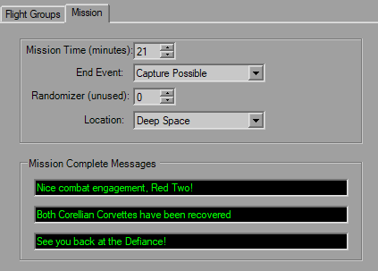

Mission Parameters

The Mission tab is rather simple and straight-forward. There'a time limit and then a couple settings for the location, death outcome and Death Star settings.
The Mission Complete Messages are different in that all three are for Mission Complete only, and will display in sequence.
The Randomizer value (formerly Unk1) is supposed to act as a random generator seed for backdrops, however is never used.